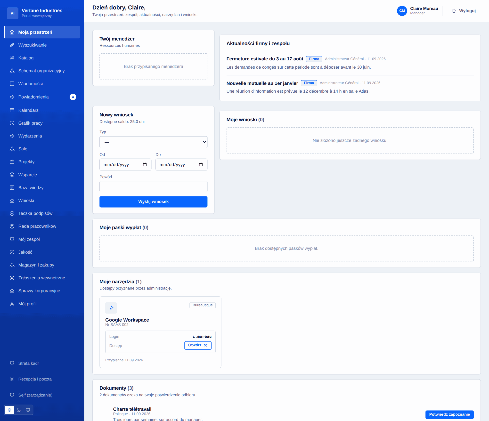
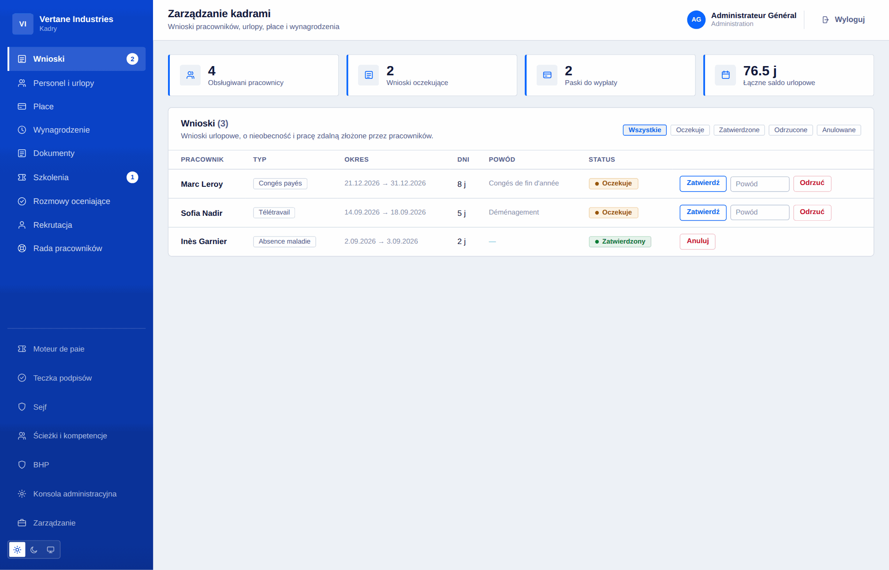
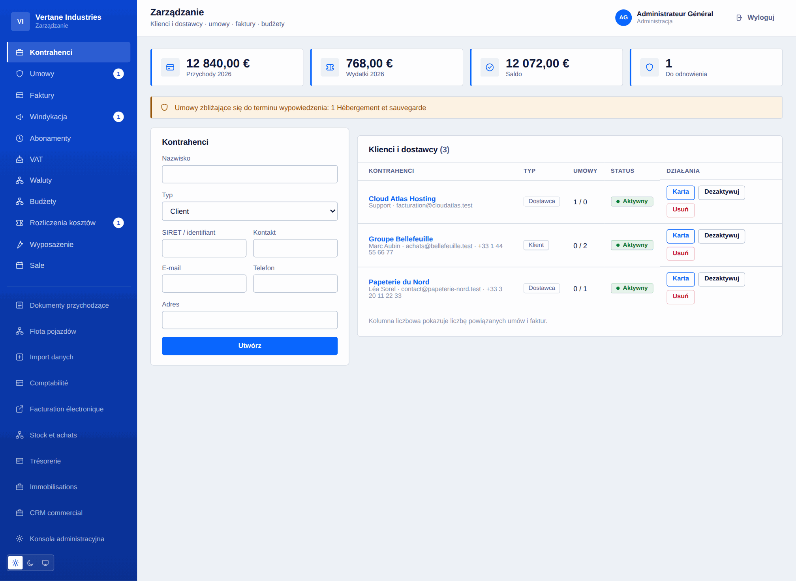
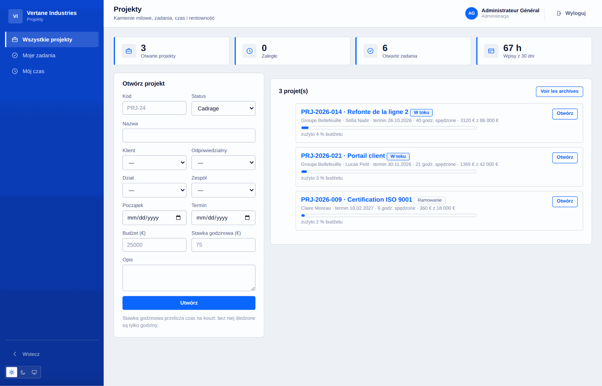
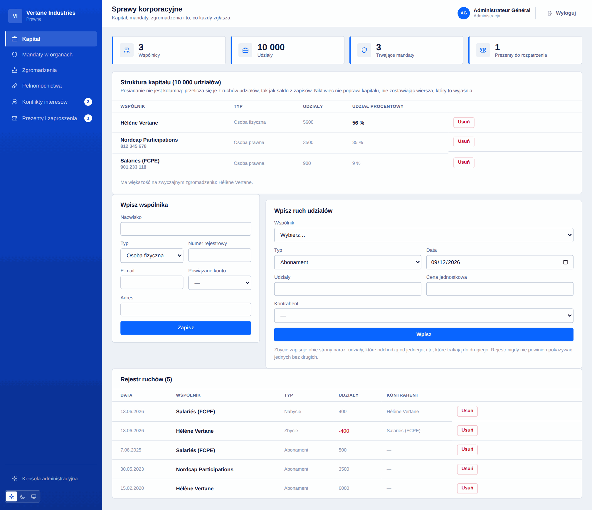

Wszystko, co potrafi Toutadmin
Pełna lista, dziedzina po dziedzinie. Każdy wiersz to wdrożony i przetestowany kod, a nie zamiar.
121 · Funkcje oznaczone «moduł» włącza się z konsoli, gdy są potrzebne.
Fundament i organizacja
To, co trzyma resztę: konta, przypisania i słownictwo wspólne wszystkim przestrzeniom.
- Konta i łączone role: administrator, HR, finanse, informatyka, osoba zaufania ds. zgłoszeń
- Przełożony wynikający z rzeczywistej struktury, nigdy nadawany ręcznie
- Działy i zespoły, kilku przełożonych na obszar, przypisania odczytywane przy każdym żądaniu
- Graficzny schemat organizacyjny wraz z kadrą i osoby nigdzie nieprzypisane
- Książka adresowa z wyszukiwaniem i filtrami, widoczność sterowana wyłącznie przez administrację
- Poczta wewnętrzna i służbowy adres konfigurowany przez administrację
- Wyszukiwanie globalne rozdzielone u źródła: czego nie wolno Ci zobaczyć, tego się nie szuka
- Centrum powiadomień dla każdej osoby, z potwierdzeniem odczytu
- Import masowy CSV: kontrolowany podgląd, zapis wszystko albo nic
- Kreator instalacji, ustawienia instancji, siedem modułów do włączenia
- 16 języków, 3 palety, motyw jasny/ciemny/systemowy, interfejs responsywny

Przestrzeń pracownika
Strona, którą każdy otwiera rano: to, co jego dotyczy, i nic więcej.
- Pulpit osobisty: przełożony, aktualności, wnioski, dokumenty do potwierdzenia
- Urlopy, wolne, nieobecności i praca zdalna: dni robocze liczone, weekendy pomijane
- Aktualne saldo urlopu, historia uzasadnionych korekt
- Paski wypłaty dostępne i przechowywane pięćdziesiąt lat w sejfie
- Kalendarz osobisty i wspólny kalendarz zespołu
- Grafik tygodnia, dyżury, pogotowie
- Przydzielone narzędzia z własnym loginem — żadne obce hasło nie jest przechowywane
- Profil: zdjęcie, opis, telefon, język, hasło, zamknięcie wszystkich sesji
- Rejestracja czasu stoperem dla freelancerów, tylko jedna otwarta naraz
- Oświadczenie o interesach i prezentach, widoczne wyłącznie dla siebie

Kadry i HR
Teczka pracownika, od przyjścia do odejścia, wraz z terminami, które za sobą niesie.
- Zatwierdzanie wniosków z odjęciem salda, odmowa z uzasadnieniem, anulowanie zwracające dni
- Paski wypłaty: tworzenie, śledzenie wypłaty, generowanie zbiorcze
- Dokumenty firmowe z imiennym potwierdzeniem odbioru
- Szkolenia: katalog, terminy, zapisy, koszt i czas trwania
- Rozmowy roczne: kampania, scenariusz, protokół
- Przyjęcie i odejście: prowadzone listy kontrolne, właściciel i termin dla każdego zadania
- Kompetencje i uprawnienia z datą odnowienia i wcześniejszym ostrzeżeniem
- Rozmowy indywidualne: wspólne podsumowanie, notatki przełożonego trzymane osobno
- Sejf cyfrowy dostępny także po odejściu, dokumenty zapieczętowane odciskiem
- Prosty podpis elektroniczny: uporządkowany obieg, odcisk, pieczęć, zaświadczenie
- Umowy terminowe: konto zamyka się samo w wyznaczonym dniu

Rekrutacja i talenty
Od zgłoszeń do pierwszego dnia, bez arkusza po drodze.
- Ogłoszenia i zgłoszenia śledzone etapami
- Przyjmowanie CV: PDF, DOCX lub tekst, zapisywane poza repozytorium
- Wyciąganie treści i przeszukiwalna baza CV
- Ważone kryteria, punktacja, próg, ranking zgłoszeń
- Przyjęty kandydat przechodzi prosto do ścieżki wdrożenia
- Ankiety wewnętrzne i barometr nastrojów, anonimowe z założenia
- Poniżej pięciu odpowiedzi żaden wynik nie jest pokazywany

BHP i rada pracowników
Obowiązki, które trzeba prowadzić na piśmie i które same się przypominają.
- Ocena ryzyka: stanowiska, zagrożenia, punktacja, środki, datowany przegląd
- Rejestr wypadków przy pracy i zdarzeń potencjalnie wypadkowych, dni absencji
- Środki ochrony: wydanie imienne, okres ważności, wymiana
- Badania lekarskie: wstępne, okresowe, kontrolne, na wniosek
- Rada: wybory, lista wyborców, głosowanie anonimowe, mandaty i ich wygaśnięcie
- Posiedzenia organu, świadczenia i korzyści dla pracowników
- Przestrzeń zarządzania zamyka się sama z końcem kadencji

Finanse i administracja
Kontrahenci, umowy, pieniądze, które wpływają, i te, które wypływają.
- Klienci i dostawcy, pełna karta: kontakty, umowy, faktury
- Umowy, a zwłaszcza wypowiedzenia: ostateczna data jest liczona i zgłaszana
- Faktury w obie strony, kwota brutto liczona, opóźnienie z terminu płatności
- Budżety według działu i roku obrotowego, zużycie agregowane automatycznie
- Rozliczenia wydatków: złożenie, zatwierdzenie, zwrot — nigdy jedno bez drugiego
- Dokumenty zgodności kontrahentów, datowane i zgłaszane czterdzieści pięć dni wcześniej
- Punktowane oceny dostawców: liczy się ostatni przegląd, nie średnia
- Wiele walut z kursem zamrożonym przy wystawieniu każdego dokumentu
- Fakturowanie cykliczne: abonament to forma, faktura to dokument
- Automatyczne odczytywanie faktur przychodzących i pobieranie IMAP skrzynki księgowej

Księgowość, płace i VAT
Moduły domyślnie wyłączone, które włącza się wtedy, gdy są potrzebne.
- Księgowość podwójna: plan kont, dzienniki, zestawienie obrotów, księga główna
- Niezbilansowany zapis jest odrzucany, a komunikat mówi o ile
- Faktura staje się zapisem jednym kliknięciem; eksport CSV dla biura rachunkowego
- Silnik płacowy: konfigurowalne stawki, brutto na netto, część pracodawcy, koszt pracodawcy
- Szczegółowy pasek wypłaty wiersz po wierszu, generowanie zbiorcze, symulator
- Deklaracje VAT: należny, naliczony, podział wg stawek, kwota do przeniesienia
- Złożona deklaracja nie jest przeliczana: to dokument, a nie pulpit
- E-faktury: kontrola EN 16931 i eksport XML CII
- Finanse: rachunki, operacje, uzgodnienia, prognoza na dwanaście tygodni
- Środki trwałe: amortyzacja liniowa i degresywna, wartość netto

Zakupy, magazyn i windykacja
Co zamówiono, co przyszło, co zafakturowano — i co nam się należy.
- Wnioski zakupowe zatwierdzane przez przełożonego, a powyżej progu przez finanse
- Zamówienia, przyjęcia i uzgodnienie trójstronne: zamówione, przyjęte, zafakturowane
- Przyjęcie większej ilości niż zamówiona jest odrzucane; różnica w fakturze jest nazwana, nie blokowana
- Artykuły, ruchy, próg alarmowy: stan to suma ruchów
- Pozycja powiązana z artykułem trafia do magazynu w chwili przyjęcia
- Struktura wiekowa należności według przedziałów opóźnienia
- Stopniowane wezwania: przypomnienie, ponaglenie, wezwanie do zapłaty, zależnie od tego, co już wysłano
- Każde wezwanie zapisane wraz z poziomem i datą

Projekty, czas i rentowność
Wiedzieć, na jakim etapie jest projekt i ile naprawdę kosztował.
- Projekty powiązane z klientem, działem, zespołem i osobą odpowiedzialną
- Datowane kamienie milowe i zadania w kolumnach według statusu, z priorytetem i szacunkiem
- Czas przypisany do projektu i zadania, najwyżej 24 h na wpis
- Rentowność: godziny, koszt wg stawki godzinowej, pozostała marża, zużyta część budżetu
- Trzy kręgi uprawnień: administracja, osoba odpowiedzialna, członkowie
- Czas na osobę i kondycja projektów na pulpicie zarządu

Wsparcie i wiedza
Zgłoszenia wewnętrzne i klientów w jednym obiegu, i odpowiedzi, które zostają.
- Zgłoszenia wewnętrzne i klientów, priorytet, źródło, przypisanie
- Termin pierwszej odpowiedzi wynikający z priorytetu, przeliczany od otwarcia
- Notatki wewnętrzne niewidoczne dla zgłaszającego i nieliczone jako odpowiedź
- Rozdział według kategorii: zgłoszenie kadrowe nie opuszcza działu kadr
- Baza wiedzy według kategorii, wyszukiwanie pełnotekstowe, regulowany zasięg
- Wskaźniki: zgłoszenia otwarte, opóźnione, średni czas

Operacje i administracja
Grafik, jakość, sale, pojazdy, recepcja.
- Grafik na osobę i dzień: zmiany, dyżury, pogotowie, praca zdalna
- Nakładanie się albo już przyznana nieobecność: wpis jest odrzucany przy tworzeniu
- Powtarzalne rotacje, zmiany nocne, publikacja tygodnia
- Kto jest teraz pod telefonem, wraz z numerem
- Jakość: niezgodności, przyczyny źródłowe, działania korygujące i sprawdzenie skuteczności
- Audyty wewnętrzne: ustalenia, podsumowanie, ustalenie podniesione do niezgodności
- Sprzęt przydzielony i zwrócony, z historią posiadaczy
- Sale i rezerwacje, nakładanie odrzucane ze wskazaniem, kto zajmuje
- Flota: serwis, przegląd, ubezpieczenie, szkody, przebieg
- Recepcja: rejestr gości, lista obecnych w budynku, poczta przychodząca i wychodząca

Zarząd i ład korporacyjny
Na co patrzy zarząd i co postanawia.
- Pulpit: zatrudnienie, nieobecni, zafakturowano, marża, koszty płac, gotówka, obciążenie wsparcia
- Cele i kluczowe wyniki, każdy we własnej skali, także malejącej
- Posiedzenia: zwołanie, porządek obrad, odnotowana obecność, protokół
- Rejestr decyzji wraz z uzasadnieniem — tym, czego szuka się dwa lata później
- Powierzone działania z właścicielem i terminem, powiązane ze swoją decyzją
- Rejestr ryzyk: ocena brutto i rezydualna, macierz 5 × 5, postępowanie, przegląd
- Wydarzenia firmowe: pojemność, automatyczna lista rezerwowa, lista obecności, budżet
- Terminy ze wszystkich przestrzeni w jednej posortowanej liście

Informatyka i rozwój
Park oprogramowania, dostępy, incydenty i to, co wdraża zespół.
- Park oprogramowania: stanowiska traktowane jak ograniczenie, koszt roczny, odnowienia
- Przegląd dostępów: najpierw konta zamknięte, potem uprawnienia administracyjne
- Incydenty informatyczne z godzinami i rzeczywiście mierzonym średnim czasem przywrócenia
- Katalog usług: krytyczność, właściciel, repozytorium, dokumentacja
- Rejestr wdrożeń według środowiska i wskaźniki wdrożeń
- Kopie zapasowe: archiwum co godzinę, sprawdzona spójność, odtworzenie, wynoszenie
- REST API do odczytu z zakresami, podpisane webhooki wychodzące
- Pełny eksport instancji do JSON, razem z dokumentami, bez sekretów

Zgodność, sprawy spółki i dane osobowe
To, co firma musi umieć udowodnić, prowadzone na bieżąco.
- Księga udziałów: stan wyliczany z ruchów, zbycie zapisane w dwóch nogach
- Mandaty w organach z okresem, odwołaniem i wcześniej zgłaszanym końcem
- Zgromadzenia wspólników: kworum w udziałach, uchwały, głosy, protokół
- Pełnomocnictwa: zakres, limit kwotowy, okres, zgłaszany koniec
- Konflikty interesów i prezenty: każdy zgłasza za siebie, administracja bada
- Szyfrowany wewnętrzny kanał zgłoszeń, wyznaczone osoby zaufania, anonimowe śledzenie kodem
- Dziennik audytu z czasem, eksportowalny i zapieczętowany łańcuchem odcisków
- RODO: rejestr czynności, eksportowane prawo dostępu, uzasadnione usuwanie
- Konfigurowalne obiegi akceptacji: formularze, progi, akceptujący według funkcji

Czegoś brakuje?
Napisz do nas. Produkt rozwija się partiami, a prośby firm, które go używają, mają pierwszeństwo.
Zacznij za darmo, zmień plan, gdy urośniesz
Poniżej pięciu pracowników wszystko jest bezpłatne. Powyżej 5 € za pracownika miesięcznie — malejąco od dwustu pięćdziesięciu — albo 10 000 € raz za licencję dożywotnią. Bez karty, żeby spróbować.